Battery energy storage systems have become critical infrastructure for India's renewable energy transition. With the government targeting 450 GW of renewable capacity by 2030, BESS deployment is essential for grid stability and renewable energy integration. However, the sector faces significant execution risks that threaten project viability and investor returns. This article examines the root causes of BESS project failures and provides actionable strategies to prevent them.
Understanding the Scope of the Problem
While BESS failure rates have improved dramatically—declining 97% between 2018 and 2023—operational data from 2025 reveals that 19% of grid-scale battery storage projects still experience hardware failures and operational issues that directly impact revenue generation. In absolute terms, this translates to approximately one in five projects struggling with performance or reliability problems that compromise their financial returns. For India, where projects are tendered at record-low bids (sometimes under ₹1.50 per kWh), any operational underperformance or delay becomes catastrophic.
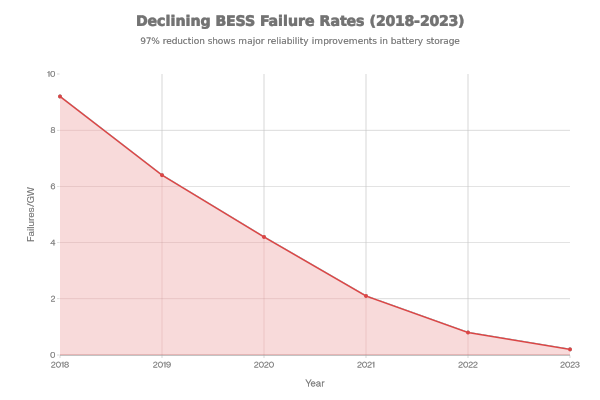
The stakes are high. A single BESS fire can cost up to $2 million in asset loss and 18 months of lost revenue, while false activation events alone can exceed $900,000 in cleanup and downtime costs. More critically, these incidents erode stakeholder confidence, making insurance more expensive and financing more difficult—a particular concern in India's emerging energy storage market where bankability is already fragile.
The Root Causes: Where BESS Projects Fail
Research from the US Electric Power Research Institute (EPRI), analyzing documented failure incidents across utility-scale BESS globally, identifies four primary failure categories. Understanding these categories is essential for India's developers, as they highlight where to allocate oversight resources and quality assurance efforts.
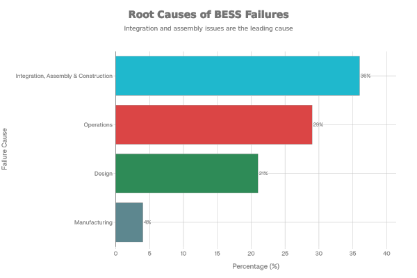
1. Integration, Assembly & Construction (36% of Failures)
The leading cause of BESS failures is sub-standard work during the integration and assembly phase. This phase involves combining battery modules, power conversion systems, balance-of-system (BOS) components—including DC/AC wiring, HVAC subsystems, and fire suppression systems—from multiple suppliers into a cohesive, functioning system.
The fundamental problem: these components "are not necessarily designed to work together." Lithium-ion BESS units often integrate equipment from 5-10+ different vendors, each following their own specifications and interfaces. Without rigorous integration discipline, incompatibilities emerge.
Real-world example: The Victoria Big Battery facility in Australia (2021) experienced a fire during commissioning when a coolant system leak in the thermal management system propagated across multiple BESS units. Root cause analysis revealed inadequate inspection procedures during assembly and end-of-line testing. This incident became a cautionary tale for the industry and led to stricter assembly protocols globally.
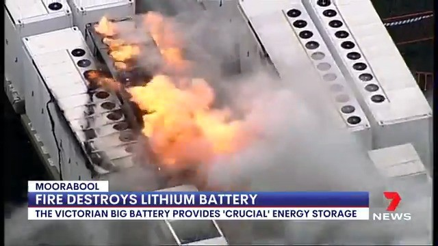
Common integration failures include:
- Improper connection of DC/AC wiring leading to voltage imbalances or ground faults
- HVAC system misalignment with thermal requirements, causing condensation and electrical shorts
- Fire suppression systems not integrated with control logic, resulting in delayed response or incompatible suppression media with lithium-ion chemistry
- Communication protocol mismatches between the Battery Management System (BMS), Energy Management System (EMS), and Power Control System (PCS)
Why this matters for India: Many BESS projects in India are being executed by first-time developers and integrators attracted by seemingly attractive bidding prices. Inexperienced integrators often lack the discipline to manage component interfaces, resulting in field modifications, rework, and commissioning delays.
2. Operational Issues (29% of Failures)
Once a BESS enters operation, it encounters a distinct set of failure modes related to control systems, thermal management, and data integrity. The 2025 ACCURE Energy Storage System Health & Performance Report—the first large-scale analysis of operational BESS data from over 100 grid-scale systems—revealed that hardware component failures trigger operational disruptions in 19% of systems.
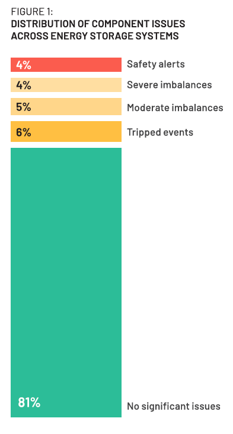
These operational failures take several forms:
Automatic Shutdowns (Tripped Events): Safety systems automatically disconnect the battery from the grid to prevent damage. While protective, frequent tripping reduces availability and revenue. Common triggers include:
- Overvoltage or undervoltage conditions due to BMS sensing errors
- Overtemperature conditions from inadequate thermal management
- Ground faults or insulation degradation
State of Charge (SoC) Estimation Errors: Errors of ±15% are common in lithium iron phosphate (LiFP) systems, with some outliers exceeding ±40%. These errors directly reduce trading flexibility and revenue optimization, as operators cannot accurately predict discharge duration or charge the battery to optimal levels. Advanced analytics can reduce these errors to ±2%, unlocking significantly greater trading flexibility.
Module and Rack-Level Imbalances: Uneven cell voltage distribution reduces usable capacity and accelerates localized degradation, necessitating premature augmentation (adding extra battery capacity to compensate).

Why this matters for India: India's operational BESS fleet is still nascent—only 500 MWh was operational as of September 2024. As the fleet grows, operational data collection and analytics maturity will be critical differentiators. Projects relying on manual monitoring or low-frequency data logging are prone to missing early fault signatures.
3. Design Issues (21% of Failures)
Design failures occur when the BESS architecture itself contains latent defects that don't manifest until the system encounters operational stress. Common design failures include:
- Inadequate humidity control: Sealed enclosures without proper dehumidification allow condensation to form on sensitive electronic components, causing electrical shorts
- Poor rain/moisture sealing: Enclosure penetrations not properly sealed allow water ingress, particularly critical in monsoon regions like India
- Combustible internal components: Plastic insulation and aluminum heat sinks can propagate fires if thermal runaway occurs in a battery cell
- Inadequate thermal pathways: Battery racks designed without proper thermal spacing or airflow allow hotspots to develop, accelerating cell degradation
- Insufficient BMS-EMS integration: The South Korea fire incident investigation revealed that insufficient integration of protection and management systems was the chief cause of 23 fires between 2017-2019. Specifically, inadequate information sharing between BMS and other controllers, improper sequencing of safety operations, and failure to verify battery status after maintenance allowed dangerous conditions to persist.
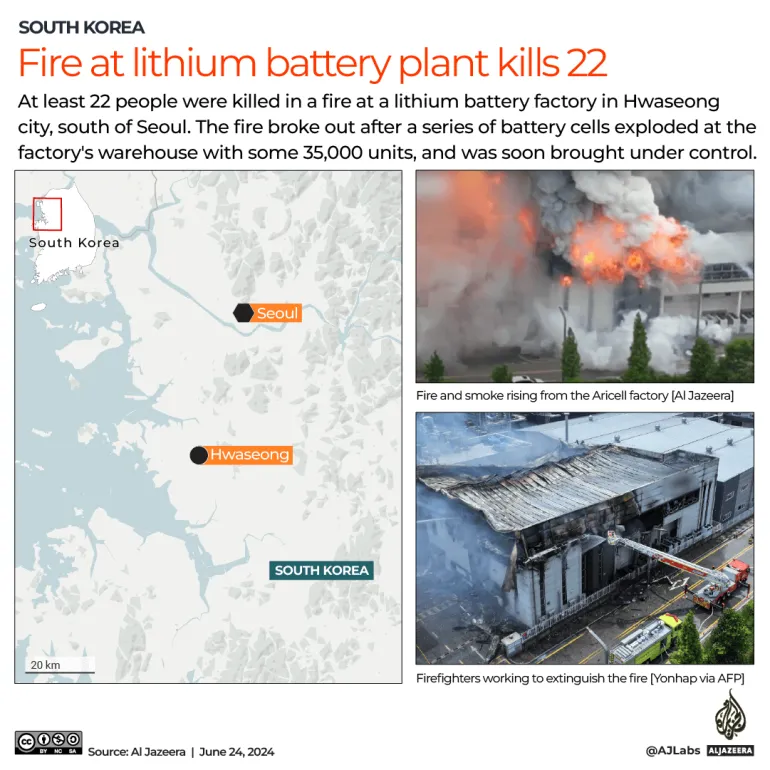
India-specific design consideration: Projects in high-humidity coastal areas or regions with heavy monsoon rainfall must account for environmental stress. Several BESS incidents globally have been traced to humidity and moisture ingress—a particular risk in India's tropical climates.
4. Manufacturing (4% of Failures)
Manufacturing defects are surprisingly rare, accounting for only 4% of documented failures. This reflects the maturity of lithium-ion battery cell manufacturing and the effectiveness of battery pack quality control at major OEMs. However, manufacturing remains relevant for India's emerging domestic battery manufacturing sector, particularly as companies ramp production under the Production-Linked Incentive (PLI) scheme.
Why India's BESS Projects Are Particularly Vulnerable
India faces compound risks beyond these technical failure modes. A convergence of market, regulatory, and execution factors creates heightened vulnerability.
Underbidding and Economic Viability
India's BESS tender process has seen record-low bids—sometimes under ₹1.50 per kilowatt-hour, compared to industry-estimated fair costs of ₹2.00-2.50 per kWh. This has attracted participants from unrelated sectors (real estate, food processing) and discouraged established developers. The IESA (India Energy Storage Alliance) president noted: "This race to offer the lowest tariffs is harming the industry."
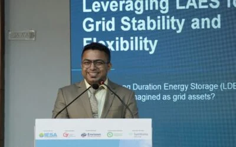
The consequence: Projects bid at uneconomic rates lack budgets for:
- Comprehensive quality assurance and commissioning testing
- Experienced integration teams and project management
- Adequate spare parts inventory for commissioning
- Contingency buffers for cost overruns or delays
Developers may cut corners on assembly quality, procurement oversight, or commissioning rigor—precisely the areas where BESS projects are most failure-prone.
Regulatory Ambiguity
India's regulatory framework for BESS remains incomplete. While the Central Electricity Authority (CEA) has issued the National Framework for Energy Storage Systems (2023), several critical gaps persist:
- Unclear revenue streams: Regulations define only one clear value stream (energy arbitrage). Clarity on compensation for grid services (frequency regulation, reactive power, black-start capability) remains limited
- Power exchange price ceiling: The ₹10 per kWh ceiling on power exchange trading limits revenue upside and squeezes project economics
- Capacity accreditation ambiguity: Guidelines on how much capacity BESS can reliably contribute to resource adequacy planning are not yet explicit
- Ancillary services transparency: While BESS can provide tertiary and secondary reserve services, market participation remains opaque and liquidity is limited
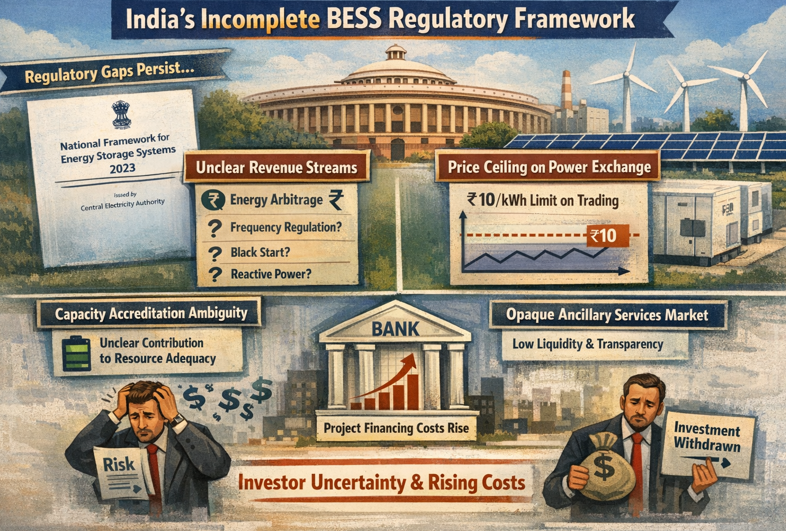
These regulatory gaps increase investor risk, as revenue projections become uncertain. Project financing becomes more expensive, and some investors withdraw entirely.
Supply Chain Concentration and Geopolitical Risk
BESS production depends on critical minerals—lithium, cobalt, nickel, and graphite—demand for which is projected to increase 14x, 20x, 20x, and 19x respectively by 2040. These minerals are sourced from a limited number of countries and processed predominantly in China. Geopolitical tensions, tariffs, and supply disruptions directly impact project costs and timelines.
In 2024-2025, lithium supply constraints led to price volatility. Developers who procured battery cells early at higher prices faced competitive disadvantage against late bidders; those who delayed procurement faced supply shortages and schedule delays. A robust BESS supply chain strategy is essential but often overlooked in India's project development process.
When BESS Projects Fail: The Timeline
A critical insight from global failure data: 72% of BESS failures occur during construction, commissioning, or within the first two years of operation. This is not coincidental.
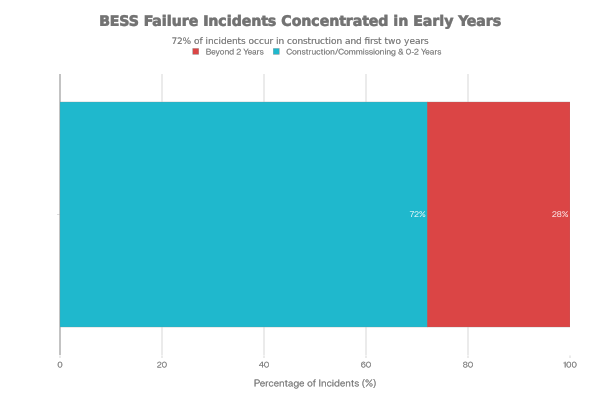
The implication is profound: BESS failures are predictable and preventable if proper discipline is applied during engineering, procurement, construction, and early commissioning phases. By the time a system is five years old and performing reliably, most latent defects have been identified and corrected. The failure-prone window is well-defined.
This timing also reveals why commissioning delays—a common challenge lasting 1-8 months—are so damaging. They defer revenue, inflate project costs, and create stress on batteries held in static conditions or incomplete system states. Delays in commissioning also strain relationships with offtakers and undermine investor confidence.
Commissioning Delays: A Systemic Challenge
The 2025 ACCURE report identifies commissioning as a critical bottleneck. Typical delays range from 1-2 months; in outlier cases, delays exceed 8 months. The root causes are often non-technical:
- Permitting bottlenecks: Grid connection approvals, environmental clearances, and local authority sign-offs can extend timelines by 6-12 months in India
- Supply chain disruptions: Critical components (switchgear, transformers, cooling systems) arriving late from international suppliers stall final assembly
- Firmware and software issues: Miscommunication between device firmware versions, control software, and SCADA systems causes unexpected failures during startup sequences. Software update crashes can require complete system resets
- Spare parts logistics: International spare parts can take weeks to arrive, even for urgent needs, causing extended project stalls
- Workforce capacity: Shortage of experienced BESS commissioning teams (a constraint in India) leads to inexperienced staff making errors that set projects back
- Warranty and performance guarantee negotiations: Lengthy technical discussions over performance guarantees, battery degradation curves, and testing protocols delay commercial operation date sign-off
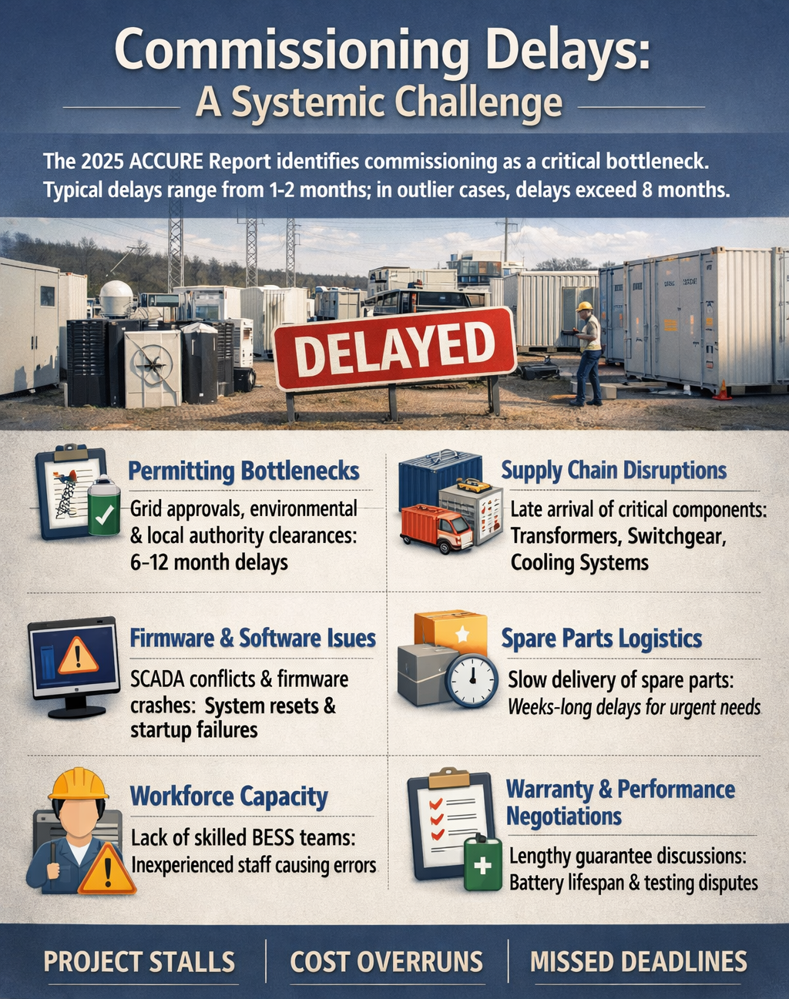
India-specific factor: Permitting delays are particularly acute in India, where grid connection is managed by state-level distribution companies (Discoms) and state regulatory authorities with varying timelines and standards. Developers often underestimate these delays in project schedules.
Best Practices: A Comprehensive Prevention Framework
Based on global experience and lessons learned, BESS projects can achieve successful execution by implementing disciplined practices across five phases: Design & Engineering, Procurement, Construction & Integration, Commissioning, and Operations.
Phase 1: Design & Engineering
Early grid connection collaboration: Engage the Distribution System Operator (DSO) and Grid-India (for interstate transmission connection) from the feasibility stage. Confirm technical requirements, grid code compliance, and interconnection standards before finalizing designs. Delays due to grid connection disagreements discovered late in the project are expensive and schedule-critical.
System-level integration planning: Develop a detailed "System Integration Plan" that maps every interface between battery modules, BMS, EMS, PCS, switchgear, HVAC, and fire suppression. Identify potential incompatibilities and create interface control documents before procurement begins. This proactive approach prevents costly rework during construction.
Environmental and hazard assessment: Conduct a thorough hazard mitigation analysis (HMA) for systems exceeding 600 kWh. This assessment should identify risks specific to the site (flood risk, extreme temperatures, dust, humidity, seismic activity) and design mitigations accordingly. For India's monsoon regions, explicit design provisions for moisture and humidity control are non-negotiable.
Power quality compliance: Work with grid planners to define power quality requirements (voltage harmonic distortion, frequency response, reactive power capability). Ensure these requirements are embedded in design specifications before bidding for equipment, not discovered during grid interconnection testing.
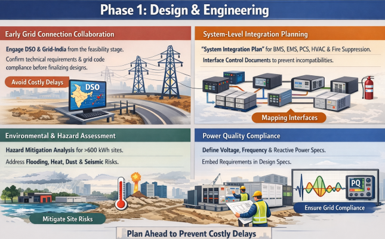
Phase 2: Procurement & Vendor Selection
Vendor prequalification scoring: Develop a vendor evaluation scorecard with weighted criteria:
- Technical compliance (ability to meet interface specifications)
- Commercial competitiveness (price, but not the sole criterion)
- Delivery timeline credibility
- Warranty and service support
- Financial stability and creditworthiness
- Quality certifications (ISO 9001, IEC standards)
Evaluate vendors against all criteria, not lowest price alone. A vendor who can deliver on schedule at slightly higher cost often delivers better project economics than a low-cost vendor who contributes delays or quality rework.
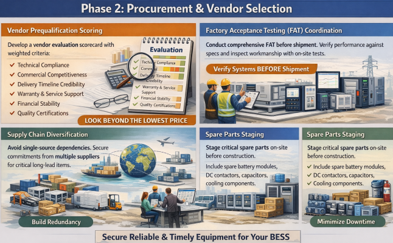
Supply chain diversification: Avoid single-source dependencies. Secure commitments from at least two suppliers for critical long-lead items (battery cells, inverters, transformers). Build redundancy into the supply chain to mitigate geopolitical or manufacturing disruptions.
Factory Acceptance Testing (FAT) coordination: Require vendors to conduct comprehensive FAT at their facilities before shipment. Participate in FAT testing to verify performance against specifications and inspect workmanship. Document all test results and non-conformances; ensure vendors address issues before delivery.
Spare parts staging: Procure and stage critical spare parts on-site before construction begins. Include spare battery modules, DC contactors, capacitors, cooling system components, and firmware backup devices. Define a "critical spares" list with 2-3 weeks lead time; ensure these are physically available before commissioning begins.
Phase 3: Construction & Integration
Quality control during BOS integration: The BOS—comprising wiring, HVAC, fire suppression, and control connections—is where most failures originate. Implement rigorous inspection protocols:
- Verify DC/AC wiring to specification (gauge, insulation, polarity, continuity testing)
- Inspect HVAC system installation, airflow pathway, and thermal sensor placement
- Test fire suppression system connectivity with control logic; verify suppression media compatibility with battery chemistry
- Conduct electrical safety tests (megohm testing, ground continuity, insulation resistance)

Construction team training: Ensure installation teams are trained on lithium-ion battery safety protocols, proper handling of thermal management systems, and emergency procedures. Poor understanding of battery chemistry and hazards leads to assembly errors and safety oversights.
As-built documentation: Maintain detailed records of actual installed configuration, including wiring diagrams, component serial numbers, sensor placements, and firmware versions. This documentation is critical for troubleshooting during commissioning and operations.
Phase 4: Commissioning
Comprehensive pre-commissioning planning: Develop a detailed commissioning plan before equipment arrives on-site. Define test sequences, success criteria, personnel requirements, and contingency procedures. Detailed planning prevents ad-hoc decisions that compromise test integrity.
Firmware and software alignment: Before energizing the system, collaborate with all equipment vendors to verify firmware versions, software compatibility, and control logic interactions. Conduct a "dry run" of software updates on test rigs to identify crashes or sequencing issues before they occur on the live system.
Structured performance testing: Follow a disciplined sequence of electrical tests, functional tests, and performance validation:
- Electrical integrity: Verify voltage levels across modules, polarity, and insulation resistance
- Control system functionality: Test BMS alarms, EMS logic, and PCS response to grid signals
- Thermal management: Verify HVAC operation, temperature sensors, and thermal control loops
- Safety systems: Test emergency shutdown, fire suppression integration, and disconnect logic
- Performance validation: Execute charge/discharge cycles to verify energy capacity, round-trip efficiency, and response time to grid commands
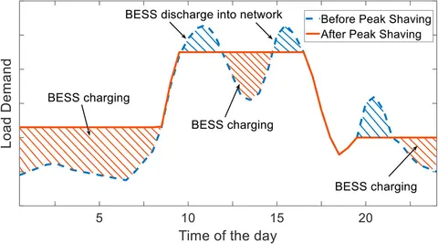
Training and handover: Before the system is handed over to operations, train the O&M team on:
- Daily operational procedures and normal parameter ranges
- Troubleshooting common faults and alarms
- Software and remote monitoring system operation
- Maintenance schedules and component replacement procedures
- Emergency response and evacuation procedures
Invite local fire and emergency response teams to familiarize themselves with the BESS on-site, creating a foundation for effective emergency response if needed.
Phase 5: Operations & Monitoring
Active performance monitoring: Implement continuous monitoring of critical parameters:
- Round-trip efficiency (aim for >88%; investigate any trend below 85%)
- State of Charge (SoC) estimation accuracy; errors of ±2% indicate excellent calibration
- Temperature gradients across battery racks; hotspots indicate thermal management issues
- Voltage imbalances between modules; divergence suggests cell degradation or internal faults
- Automatic shutdown events (tripped events); frequent tripping points to control logic or hardware faults
Predictive maintenance: Analyze historical data to predict component failures before they occur. For example, gradual increases in internal resistance, voltage drift, or cooling system vibration can indicate incipient failures. Scheduling maintenance interventions based on predictive analytics rather than fixed intervals reduces downtime and extends asset life.
Depth-of-discharge optimization: Manage battery state of charge to balance revenue and degradation. Systems operating at shallow depth of discharge (20-30% DoD) experience minimal degradation but generate lower revenue. Systems optimized through analytics to operate at 80-90% DoD while respecting safe temperature and voltage boundaries achieve both high revenue and acceptable degradation rates.
Data quality assurance: Ensure data logging frequency and transmission reliability are adequate. Low-resolution data (hourly or daily) masks important failure signatures. High-frequency data (1-minute or faster) combined with anomaly detection algorithms enables early fault detection and predictive maintenance.
India-Specific Recommendations
Beyond global best practices, India's unique context requires tailored mitigation strategies:
Regulatory advocacy: Industry associations like IESA should continue advocating for regulatory clarity on:
- Revenue streams for ancillary services and grid support
- Clear capacity accreditation methodologies for resource adequacy planning
- Transparent ancillary service market pricing
- Technical standards and codes for BESS installations (modeled on CEA guidelines but more detailed)
Standardized RFQ templates: The government or industry body should develop standardized Request for Quotation (RFQ) templates for BESS projects, including:
- Technical specifications aligned with CEA standards
- Warranty and performance guarantee terms
- Liquidated damages for schedule delays or performance shortfalls
- Supply chain risk mitigation requirements
- Quality assurance and commissioning testing protocols
Standardized RFQs reduce transaction costs for developers and suppliers while embedding best practices.
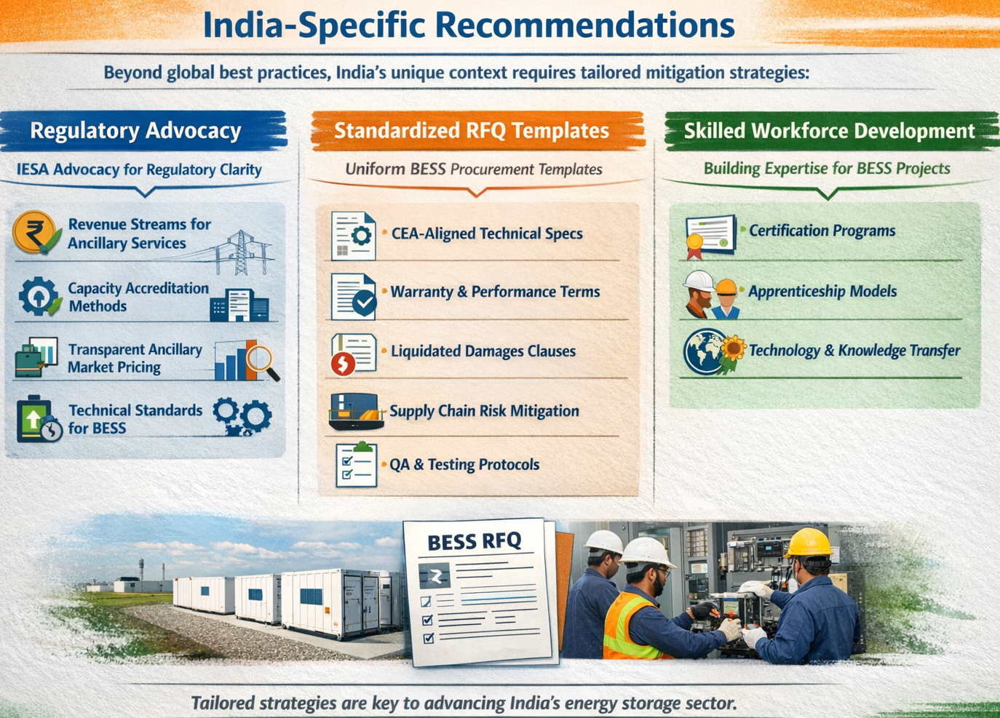
Skilled workforce development: Training programs for BESS installation, commissioning, and operations teams are critical bottlenecks. Government and industry should collaborate on:
- Certification programs for BESS technicians and engineers
- Apprenticeship models linking trainees to project execution
- Knowledge transfer from international partners through technology licensing and joint ventures
Local supply chain development: While India cannot domestically produce lithium or cobalt, strategic investments in battery assembly and BOS component manufacturing can reduce lead times and costs. The PLI scheme for Advanced Chemistry Cells (ACC) batteries is a step in this direction; equivalent support for BOS component manufacturers would accelerate supply chain resilience.
Pilot project learning: Government-supported demonstration projects (like the Rajnandgaon 100 MW/120 MWh pilot) should be structured with explicit knowledge-sharing requirements. Post-implementation reviews documenting lessons learned, commissioning challenges, and operational performance should be published to accelerate sector-wide learning.
Looking Forward: The Path to Project Success
The headline statistics are encouraging: BESS failure rates have declined 97% since 2018, reflecting industry maturation and the incorporation of lessons learned into modern designs and practices. However, India's emerging BESS market cannot assume this global trajectory will automatically apply locally. The sector's economics are fragile, the regulatory environment is still evolving, and execution experience is concentrated among a small number of players.